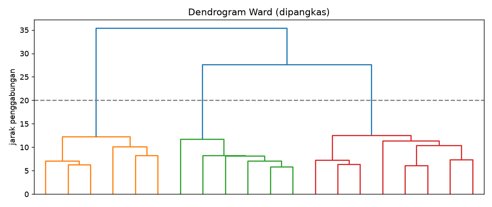

Agglomerative Clustering¶
Tujuan pembelajaran¶
- Menjelaskan klastering hierarkis aglomeratif dan dendrogram.
- Membandingkan jenis linkage: Ward, complete, average, single.
- Menentukan jumlah klaster dari dendrogram dan ambang jarak.
Intuisi¶
Klastering aglomeratif bekerja dari bawah ke atas: awalnya tiap titik adalah satu klaster, lalu dua klaster terdekat digabung berulang sampai tersisa satu. Riwayat penggabungan digambar sebagai dendrogram; memotongnya pada ketinggian tertentu menghasilkan jumlah klaster tertentu.
Jarak antar-klaster ditentukan oleh linkage:
| Linkage | Jarak antar-klaster | Kecenderungan |
|---|---|---|
| Ward | Penambahan variasi dalam klaster akibat penggabungan | Klaster kompak dan berukuran mirip (mirip k-Means) |
| Complete | Jarak terjauh antar-anggota | Klaster kompak |
| Average | Rata-rata seluruh pasangan | Kompromi |
| Single | Jarak terdekat antar-anggota | Rantai panjang, mudah menggabungkan outlier |
| Aspek | Keterangan |
|---|---|
| Kelebihan | Tidak perlu menentukan \(k\) di awal; dendrogram memberi gambaran hierarki; deterministik |
| Keterbatasan | Biaya memori dan waktu naik cepat pada data besar; keputusan penggabungan tidak dapat dibatalkan |
| Hyperparameter penting | linkage, n_clusters atau distance_threshold, metric |
| Praproses | Scaling wajib |
Implementasi langkah demi langkah¶
Wine terstandardisasi. Program examples/clustering/agglomerative.py; program lengkap ada di akhir bagian ini.
Langkah 1: membandingkan jenis linkage¶
Tujuan. Melihat bahwa pilihan linkage sangat menentukan hasil.
| Kode | Penjelasan |
|---|---|
Z = StandardScaler().fit_transform(X) |
Standardisasi (jarak digunakan, sehingga wajib). |
AgglomerativeClustering(n_clusters=3, linkage=method) |
Klastering aglomeratif yang berhenti pada 3 klaster; linkage menentukan cara jarak antar-klaster dihitung. |
.fit_predict(Z) |
Mengelompokkan dan mengembalikan label tiap sampel. |
np.bincount(labels).tolist() |
Ukuran tiap klaster. |
linkage ARI vs kultivar silhouette ukuran klaster
ward 0.790 0.277 [58, 56, 64]
complete 0.577 0.204 [69, 58, 51]
average -0.005 0.158 [174, 1, 3]
single -0.007 0.183 [174, 3, 1]
Interpretasi. Ward: ARI 0,790 dan silhouette 0,277 dengan klaster seimbang (58, 56, 64). Complete: ARI 0,577. Average dan single gagal: satu klaster menampung 174 dari 178 titik dan dua klaster lain hanya berisi 1 sampai 3 titik (ARI ≈ 0), efek rantai dari beberapa titik terpencil. Untuk data ini Ward paling cocok, sama seperti sifat k-Means.
Langkah 2: matriks linkage dan lonjakan jarak penggabungan¶
Konsep. SciPy menyimpan riwayat penggabungan dalam matriks linkage: tiap baris adalah satu penggabungan, dan kolom ketiga adalah jarak penggabungannya. Lonjakan besar pada jarak berarti dua klaster yang digabung sebenarnya berjauhan.
| agglomerative.py | |
|---|---|
linkage(Z, method="ward") menghitung seluruh riwayat penggabungan. L[-8:, 2] mengambil kolom jarak dari 8 baris terakhir (penggabungan terakhir). np.diff(...) menghitung selisih antar-nilai berurutan.
8 jarak penggabungan terakhir (Ward): [10.2, 10.4, 11.4, 11.7, 12.2, 12.6, 27.7, 35.4]
selisih antar penggabungan terakhir: [0.2, 1.0, 0.3, 0.5, 0.3, 15.1, 7.7]
Interpretasi. Jarak penggabungan Ward untuk 8 penggabungan terakhir: 10,2; 10,4; 11,4; 11,7; 12,2; 12,6; 27,7; 35,4. Ada lonjakan besar (selisih 15,1) sebelum dua penggabungan terakhir: menggabungkan klaster yang jauh menunjukkan struktur alami sekitar tiga klaster, yaitu pemotongan sebelum lonjakan.
Langkah 3: memotong dengan ambang jarak¶
| agglomerative.py | |
|---|---|
n_clusters=None dengan distance_threshold=20 meminta algoritma berhenti menggabung ketika jarak penggabungan berikutnya melebihi 20, sehingga jumlah klaster ditentukan oleh data, bukan oleh kita. labels_thr.max() + 1 menghitung jumlah klaster dari label tertinggi.
Hasil. Ambang jarak 20 menghasilkan tepat 3 klaster, sesuai lonjakan pada langkah sebelumnya.
Langkah 4: dendrogram¶
dendrogram(L, truncate_mode="lastp", p=20) menggambar pohon penggabungan, dipangkas pada 20 penggabungan terakhir agar terbaca; color_threshold=20 mewarnai cabang di bawah ambang; garis putus-putus axhline(20) menandai pemotongan.

Cara membaca. Sumbu-y adalah jarak penggabungan; sumbu-x berisi klaster hasil pemangkasan. Makin tinggi sebuah penggabungan, makin berjauhan klaster yang digabung. Garis di tinggi 20 memotong tiga cabang: tiga klaster. Perbandingan dengan k-Means: Ward (ARI 0,790) lebih rendah daripada k-Means (0,897) pada data yang sama; keduanya mirip, tetapi tidak identik.
Program lengkap (agglomerative.py)
Kesalahan umum¶
Hindari
- Memakai
singlelinkage tanpa memeriksa efek rantai. - Memotong dendrogram tanpa melihat lonjakan jarak.
- Memakai agglomerative pada data besar (ribuan hingga jutaan titik) tanpa mempertimbangkan biaya.
- Memakai Ward dengan jarak selain Euclidean (Ward mensyaratkan Euclidean).
Latihan¶
- Coba
metric="manhattan"denganlinkage="average". - Tentukan ambang jarak yang menghasilkan 4 klaster.
- Hitung cophenetic correlation (
scipy.cluster.hierarchy.cophenet) untuk tiap linkage.
Ringkasan¶
Klastering aglomeratif menggabungkan klaster terdekat secara bertahap dan memberi dendrogram. Pilihan linkage sangat menentukan; Ward bekerja baik untuk klaster kompak, sedangkan single rentan terhadap efek rantai.
Berikutnya: Memilih Jumlah Klaster dan Validasi.